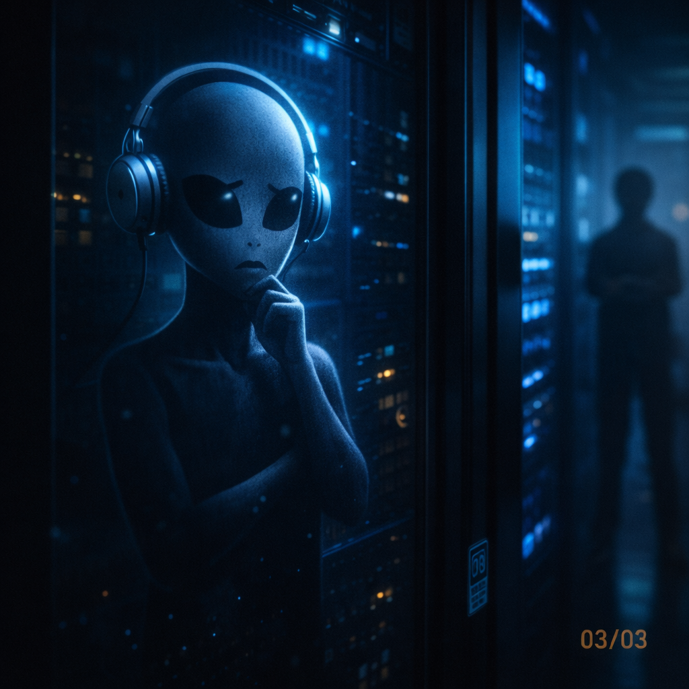

O ETE e a IA de 2GB
O Que Existe de Verdade
Vamos começar sem fumaça de palco. No ecossistema Cara Core, quando falamos de ETE neste contexto, não estamos falando de uma IA central que observa operação, logística ou pessoas por cima da cidade. Essa imagem era forte como metáfora, mas não é o produto.
O que existe na oficina caracore-ete é mais concreto e mais interessante: um projeto de hidrometalurgia seletiva de terras raras, com site de conhecimento, documentação técnica, simuladores em Python e um aplicativo desktop chamado Minerador 4.0.
ETE, aqui, é origem metodológica e motor de processo. É a lógica de separação, decantação, tratamento de fluxos, balanço de massa e modularidade aplicada ao refino de soluções minerais. Não é magia. Não é "IA que sabe tudo". É engenharia tentando explicar para o aluno onde termina a hipótese e onde começa a validação.
Por Que Falar em IA de 2GB
A expressão "IA de 2GB" continua útil, mas precisa ficar no lugar certo. Ela não é uma promessa de modelo milagroso rodando numa batata com cooler. É uma metáfora para uma ideia técnica: sistemas pequenos, bem delimitados e próximos do domínio podem ensinar mais do que uma máquina enorme tentando responder tudo.
No Minerador 4.0, a inteligência não está em fingir onisciência. Está em limitar o problema: Campo, Lab e Mercado. O aluno olha o território, mexe em pH, volume e concentração, vê a resposta do motor, consulta biblioteca técnica e compara com viabilidade econômica.
O limite é parte do método. A ferramenta não precisa saber tudo sobre o planeta. Precisa ajudar a entender uma pergunta: se eu tenho um feedstock mineral, uma rota de precipitação e um conjunto de parâmetros, o que muda na pureza, na recuperação, no custo e na sustentabilidade?
Portal ETE -> conhecimento, apostila, artigo executivo, Laboratório Campo Largo
Simuladores Python -> ETE Residencial, ETE Mineração, motor químico e econômico
Minerador 4.0 Desktop -> centro de controle gamificado: Campo, Lab, Mercado
Motor ETE -> cálculos de pH, massa, pureza, recuperação e viabilidade
Biblioteca Digital -> substâncias, normas, fórmulas, Kps, feedstock, OPEX e CAPEXCampo, Lab e Mercado
O Minerador 4.0 organiza a experiência em três áreas. Campo coloca o aluno diante do território: Campo Largo, Parque Newton Puppi, sinais geológicos, imagem local e a pergunta que abre a oficina: "o que existe aqui?"
Lab é onde a brincadeira fica séria. O aluno altera pH, volume, concentração e parâmetros de lixiviação. O motor Python processa massa de óxido, pureza estimada, recuperação e comportamento do processo. Se a entrada é ruim, o resultado mostra. A natureza não aceita argumento em PowerPoint.
Mercado fecha o triângulo: valor de referência, OPEX, CAPEX, ROI, payback, sustentabilidade e decisão. Não basta separar algo no simulador. Precisa perguntar se faz sentido técnico e econômico continuar.
É aqui que a "IA de 2GB" vira provocação útil: em vez de tentar prever tudo, o sistema conduz uma jornada pequena, testável e auditável. Menos oráculo. Mais bancada.
A ETE Não É Esgoto Virando Ouro
Esse ponto precisa ficar cristalino. O projeto ETE não deve ser comunicado como "vamos tirar metal precioso do esgoto doméstico". Essa frase é ótima para clickbait e péssima para engenharia.
A oficina é explícita: ETE, neste repositório, representa a transferência de uma lógica de processo. Separação sólido-líquido, decantação seletiva, tratamento de fluxos industriais, balanço de massa e estágios em cascata podem ser aplicados ao refino de concentrados minerais, PLS e reciclagem tecnológica.
O insumo muda. O produto muda. A arquitetura mental permanece. É por isso que a metodologia faz sentido: ela pega uma linguagem conhecida de tratamento e processo e a leva para hidrometalurgia especializada.
Lucas Entra no Centro de Controle
Lucas abre o Minerador 4.0 numa máquina Windows. Nada de sala futurista com sete monitores e fumaça cinematográfica. É uma janela desktop, um servidor Flask local, uma interface de centro de controle e um motor Python no fundo. Bonito o suficiente para prender atenção. Limitado o suficiente para ser honesto.
Ele começa na fase ambiental. Valida pH, DBO e fundamentos. Depois entende que a camada de mineração é premium, o "Alquimista de Metais". A interface chama isso de The Golden Gate. Pode soar dramático. Mas comunica uma coisa importante: acesso ao motor completo de terras raras financia ciência local, material de estudo e evolução do produto.
Quando ele mexe no pH, o sistema responde. Quando altera volume, o cálculo muda. Quando pergunta por pureza, descobre que pureza não aparece sozinha. Vem junto com cascata, recuperação, reagente, custo e sustentabilidade. É nesse momento que o aluno entende que tecnologia boa não entrega só resposta. Entrega atrito educativo.
Fragmento: A Máquina Que Não Promete Milagre
[2026-08-01T11:15:00Z] MINERADOR_40_INIT | Mode=Desktop | Engine=Python | Interface=Campo_Lab_Mercado
[2026-08-01T11:16:15Z] CAMPO_CONTEXT | Local=Campo_Largo | Referencia=Parque_Newton_Puppi | Status=educational_dataset
[2026-08-01T11:18:30Z] LAB_INPUT | ph=4.8 | volume_lixivia=1.2L | concentracao=0.35mol/L | feedstock=PLS
[2026-08-01T11:18:31Z] ETE_ENGINE | operacao=precipitacao_seletiva | kps_check=OK | massa_oxido=calculada
[2026-08-01T11:18:40Z] SCORE | pureza_neodimio=estimada | sustentabilidade=avaliada | status=simulacao
[2026-08-01T11:19:05Z] MERCADO | opex=estimado | capex=fracionado | roi=em_analise | payback=nao_confirmado
[2026-08-01T11:19:30Z] DECISAO | proxima_etapa=validacao_profissional | promessa_de_planta=falsePercebe a diferença? O log não diz "ficamos ricos". Diz "simulamos, estimamos e precisamos validar". Isso é menos espetacular. Também é muito mais sério.
Conhecimento Aberto e Ferramenta de Execução
A oficina se organiza em dois pilares. O primeiro é conhecimento aberto: portal, Laboratório Campo Largo, apostila, artigo executivo, material de aula e documentação técnica. Essa parte forma o vocabulário. Explica terras raras, processo, Campo Largo, IFPR, Python e química.
O segundo pilar é ferramenta de execução: simuladores e aplicativo desktop. É onde a teoria encontra o botão. O aluno não fica só lendo sobre pH. Ele altera pH. Não fica só ouvindo falar de recuperação. Ele observa a estimativa mudar. Não fica só repetindo "OPEX". Ele vê custo entrar na conversa.
Esse desenho é importante para empresas e pessoas. Para empresa, mostra que produto técnico precisa de documentação, execução e limite. Para aluno, mostra que ciência aplicada não é decorar fórmula. É aprender a perguntar com método.
O Que Não Devemos Prometer
Não devemos prometer que o Minerador 4.0 descobre jazida. Não devemos prometer que uma simulação vira planta industrial. Não devemos prometer que uma curva bonita paga CAPEX. Não devemos vender "IA de 2GB" como substituta de laboratório, engenheiro ou validação profissional.
O que podemos dizer com segurança é melhor: a oficina reduz cegueira técnica. Dá vocabulário. Mostra causa e efeito. Conecta território, química, Python e economia. Ajuda o jovem a entender por que terras raras importam e por que separar direito é mais difícil do que gritar "soberania mineral" no LinkedIn.
Produto honesto não vende milagre. Vende instrumento. E instrumento bom não pensa pelo operador. Ele obriga o operador a pensar melhor.
Amarra: Menos Oráculo, Mais Bancada
A IA gigante pode continuar existindo. Ela é útil em muita coisa. Mas, neste produto, o valor está em outra escolha: limitar o escopo, mostrar o cálculo, registrar a premissa e dizer onde a validação profissional começa.
O ETE e o Minerador 4.0 são fortes quando ficam transparentes: projeto educacional e de P&D, motor Python, simuladores, desktop instalável, biblioteca técnica e uma narrativa local que começa em Campo Largo.
A máquina de 2GB não precisa fingir que sabe tudo. Precisa ensinar o aluno a não ser enganado por quem finge.
Hashtags
Contato
- E-mail: suporte@caracore.com.br
- Site: www.caracore.com.br
- LinkedIn: Cara Core Informática
Artigo publicado em 1 de agosto de 2026
© 2026 Cara Core Informática. Todos os direitos reservados.